How files are rendered¶
Every buffer goes through the same two layers before it reaches the screen: Tree-sitter syntax highlighting, and — for the formats where raw text is hard to read — a rendering layer that styles the structure and conceals the markup that carries it.
All screenshots on this page use the monokai-pro theme.
Syntax highlighting¶
Highlighting is Tree-sitter based, not regex based: the file is parsed, and the colours come from the syntax tree. That is why a keyword inside a string stays a string, and why the highlighting survives half-typed code.
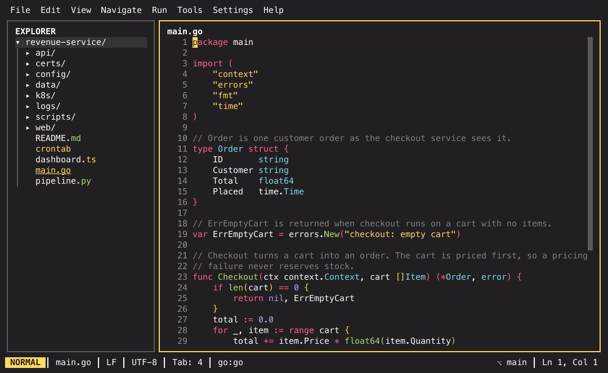
Every bundled language is highlighted the same way — the grammar changes, the mechanism does not:
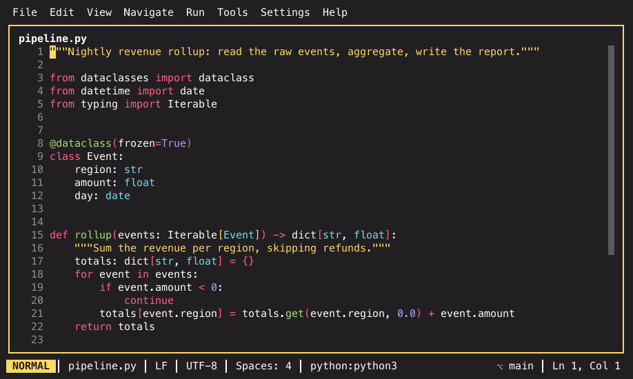
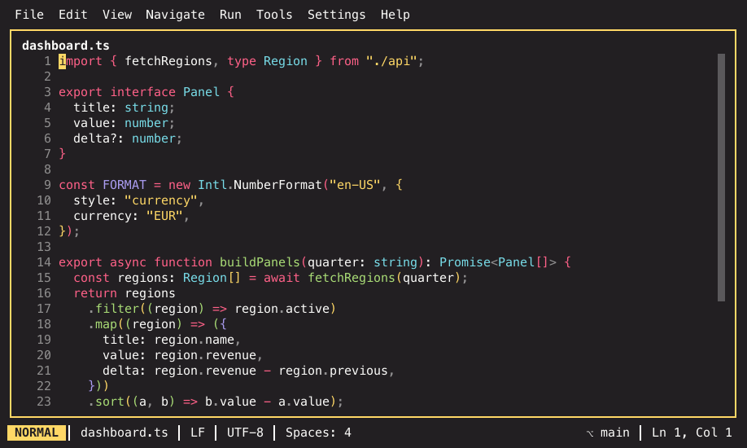
Which languages are bundled, and how to add one, is covered in Code intelligence.
Conceal, and why the caret reveals¶
The rendering layers hide the characters that only exist to carry structure:
the ** around bold text, the commas between CSV fields, the ANSI escape
bytes in a log. Hiding them is safe because nothing is rewritten — the file on
disk is untouched, and the hidden text comes back the moment you need it:
the span the caret is in renders raw. Move onto a bold word and its **
markers reappear; move away and they are gone again. So you can still edit the
markup, and you never edit blind.
The same mechanic carries a whole family of decoded stand-ins — epoch
timestamps drawn as dates, byte counts as 10 MiB, \uXXXX escapes as the
characters they name, an octal mode as rw-r--r--, a certificate as a one-line
summary. Conceal and decoded values documents every one of them,
with the settings that control them.
Markdown¶
editor.markdown_rendering styles inline spans, conceals the markers, and
draws pipe tables with box characters. Raw source first:
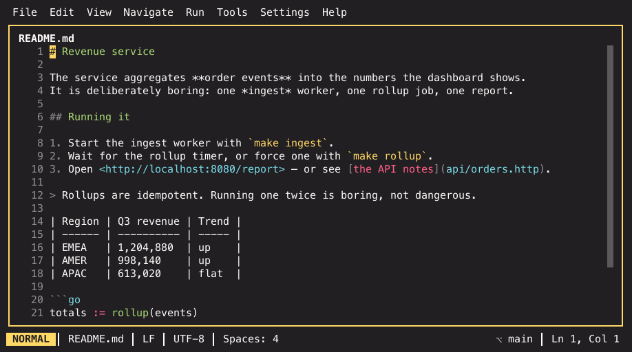
The same file rendered:
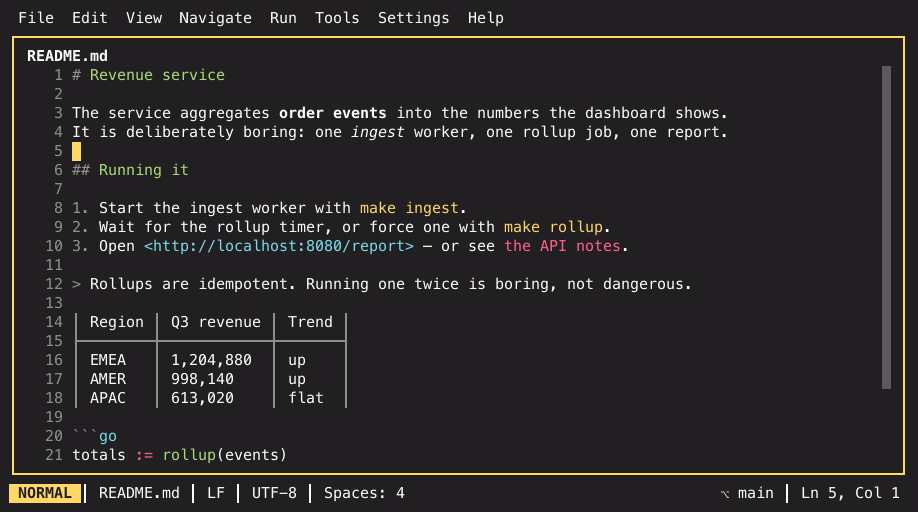
And with the caret inside the **order events** span on line 3 — only that
span shows its markers:
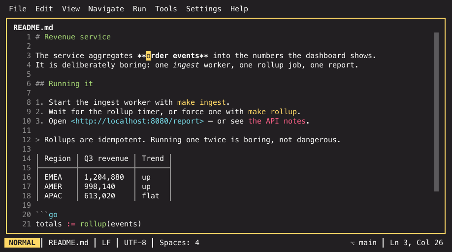
Toggle it for the current view with Toggle Markdown Rendering from the
palette; editor.markdown_rendering sets the default.
In the separate Markdown preview pane, / — or Cmd+F / Ctrl+F —
searches the rendered document, and n / N step through the matches.
Mermaid diagrams in the preview¶
The preview draws ```mermaid fences instead of printing them. It
needs an external renderer, which IKE never installs for you:
go install github.com/AlexanderGrooff/mermaid-ascii@latest # preview.diagrams = ascii
npm install -g @mermaid-js/mermaid-cli # preview.diagrams = image
preview.diagrams picks what happens:
| Value | Effect |
|---|---|
ascii (default) |
The fence is rendered to text by mermaid-ascii and replaces the code block. |
image |
mmdc renders a PNG at the pane's width and it is drawn as pixels on a terminal with Kitty graphics; anywhere else this behaves like ascii. |
off |
Fences stay syntax-highlighted code blocks. |
Rendering runs in the background and is cached per fence, so typing around a diagram never re-runs the renderer — only editing the diagram itself does. Until the picture arrives the code block stays put. If the renderer is not installed, the block keeps a one-line hint naming what to install (said once per session as a notification, not once per keystroke); if the renderer rejects the diagram, its error appears under the block.
Installed a renderer while IKE was already running? Re-render Preview Diagrams from the palette throws away every cached picture and tries again.
CSV and TSV¶
editor.csv_rendering turns a delimited file into a table: fields aligned into
columns, each column its own colour, the header row pinned while you scroll,
and the separators concealed. Raw:
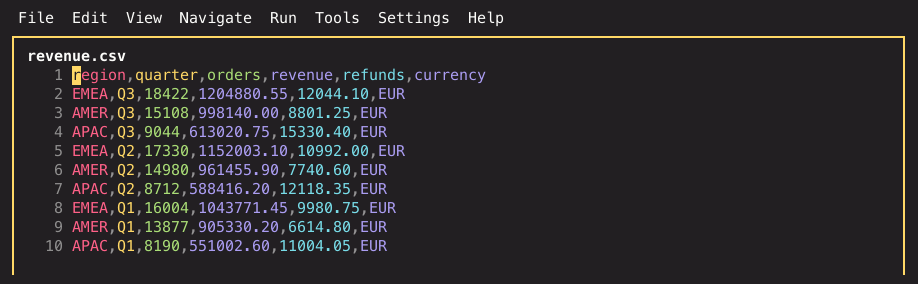
Rendered:
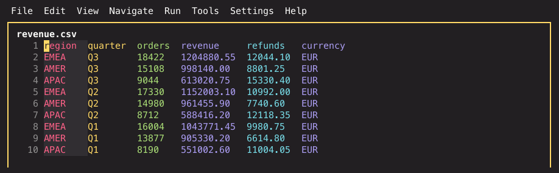
The alignment is display-only. Column widths never reach the file, and typing in a cell edits the plain text underneath.
Logs¶
editor.log_rendering makes a .log file readable: severities coloured,
timestamps dimmed, thread and logger names rainbow-coloured so one component's
lines are easy to follow, key=value pairs split into key and value, and ANSI
escape sequences drawn as the styles they mean — with the escape bytes
themselves concealed. Raw, escape bytes and all:
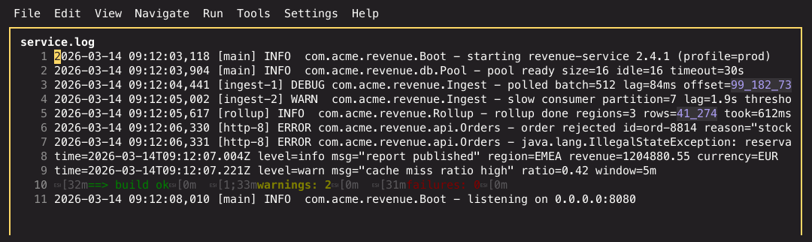
Rendered:
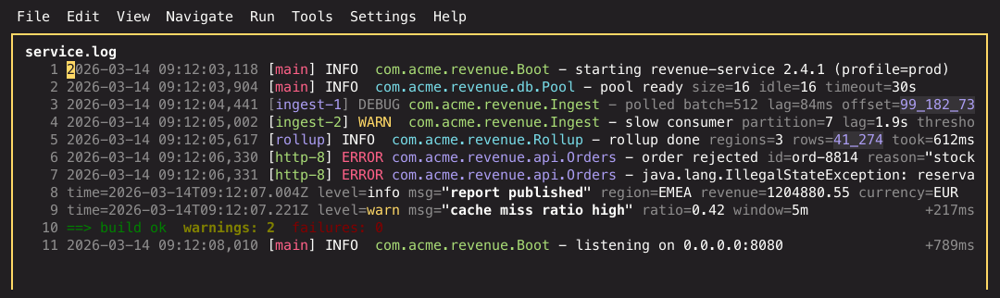
The escapes follow the same positional-reveal rule as every other conceal. With the caret on the coloured line, its escape bytes are back:
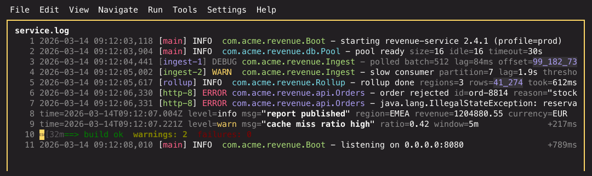
Polling services write the same line over and over. A run of consecutive
identical lines collapses into the first one with a dimmed ×N marker counting
the run — lines only differing in their timestamps count as repeats. Move the
caret onto the collapsed line and the whole run comes back, the same positional
reveal the escapes use.
At the right edge of each line sits the time elapsed since the previous one —
+450ms, +7s 300ms, +30s — so stalls and slow operations are visible
without comparing timestamps by eye. The hints of a file share one column
layout: seconds under seconds, milliseconds under milliseconds, so the column
can be swept by eye instead of read row by row. A gap that is large for this file (ten times its
usual cadence) is drawn in the warning colour, so a hang stands out. Lines
without a readable timestamp show no hint and do not break the chain: the next
timestamped line still measures from the last real one, which is what makes a
stack trace's total cost readable. The hint only appears where the line leaves
room for it, so it never covers text.
Toggle it per view with Toggle Log Rendering.
Rotated logs as one timeline¶
A rotated log is one log split across files: app.log holds the last hour,
app.log.1 the hour before, app.log.2.gz the day before that. Opening one of
them says how many more files belong to it, and Open Rotated Log Set (Merged
Timeline) puts the whole set into a single read-only buffer, oldest lines
first. Compressed members are read decompressed, and each region opens with a
separator naming the file it came from:
──── app.log.2.gz ────
2026-08-08 08:00:00 INFO compressed line
──── app.log.1 ────
2026-08-09 09:00:00 INFO yesterday
──── app.log ────
2026-08-10 10:00:00 INFO live
Everything the log rendering does keeps working across the whole timeline — severities, deltas, repeat collapsing, search — so a question that spans a rotation ("what happened around midnight") is one buffer and one search away. The elapsed-time hint on a region's first line measures against the last timestamped line above it, which is exactly the gap across the boundary.
Toggle Follow (Tail -f) works on the timeline too: it tails the newest file
of the set, and when the log rotates under it — the live file moving to
app.log.1, a new one taking its place — the set is merged again and the tail
continues, so nothing is lost at the boundary. Run the command again to refresh
a timeline you are not following.
The set is found next to the file: same directory, same name, a numeric or date
suffix (.1, .2026-08-01, .20260801) with an optional .gz. Very large
sets are cut at the large-file
limits — from the oldest end, so the lines next to
the live log always survive, and a toast says what was left out.
Jupyter notebooks¶
A .ipynb file opens as the notebook it is, not as the JSON it is stored in:
each cell with its index, type and execution count in the gutter, markdown
cells rendered like a markdown preview, code cells highlighted in the
notebook's own language, and every cell's outputs below it — stdout and
stderr streams, text/plain results, HTML results degraded to text, PNG and
JPEG images (as pixels where the terminal supports graphics, as a
size/format line elsewhere) and errors with their traceback.
j/k move between cells, g/G jump to the ends, the arrows and the wheel
scroll. enter folds a cell's outputs away and back. / (or cmd+f) searches
across the cell sources, n/N step the matches. e opens the current
cell's source as a scratch file in the notebook's language, y copies it, and
o saves the cell's image output next to the notebook.
The view is read-only — there is no editing and no kernel. Notebooks re-render by themselves when a kernel writes the file, and a notebook IKE cannot parse shows the JSON error plus a pointer at Open File As… → Text editor, which opens the raw document.
Binary files: the hex viewer¶
A file with a NUL byte in its first 8 KiB and no dedicated viewer (image,
archive, database, gzip) opens read-only in a hex viewer instead of a text
buffer: offset, hex bytes and ASCII side by side, 8/16/32 bytes per row
depending on the pane width. Move with j/k/h/l, g/G and ctrl+d/ctrl+u;
the footer shows the cursor's offset in decimal and hex, and the inspector row
above it decodes the bytes under the cursor (u8/i8, u16/u32/u64 little- and
big-endian, f32/f64, the UTF-8 rune). v selects a range and y copies it —
as a hex string or as raw bytes. / (or cmd+f) searches for text, a 0x… hex
sequence or \xNN escapes; n/N and cmd+g/cmd+shift+g step the matches.
files.binary_open (Settings → Files & Session) switches the default back to
the text editor, which then opens the binary with code insight off. And Open
File As… (cmd+alt+shift+o, also in the explorer and tab context menus)
forces any file into any viewer — a .db as text, a .png as bytes — with a
notification instead of a broken pane when the file does not satisfy the
chosen viewer.
Turning it off¶
Each layer is one setting, and each has a palette command that flips it for the current view only:
| Layer | Setting | Per-view toggle |
|---|---|---|
| Markdown | editor.markdown_rendering |
Toggle Markdown Rendering |
| CSV / TSV | editor.csv_rendering |
— |
| Logs | editor.log_rendering |
Toggle Log Rendering |
| Whitespace | editor.show_whitespace |
Toggle Whitespace Rendering |
Those are the three markup layers. The decoding families — timestamps, numbers, escapes, cron, file modes, certificates, secrets — have one switch each as well; they are listed in Conceal and decoded values.
The settings reference has the full list, including the highlighting limits that apply to very large files.
Related¶
- Conceal and decoded values — every conceal family in depth, and the reveal rules they share
- The modal editor — moving the caret that drives the reveal
- Code intelligence — language servers on top of the highlighting
- Git — the gutter markers and the diff viewer